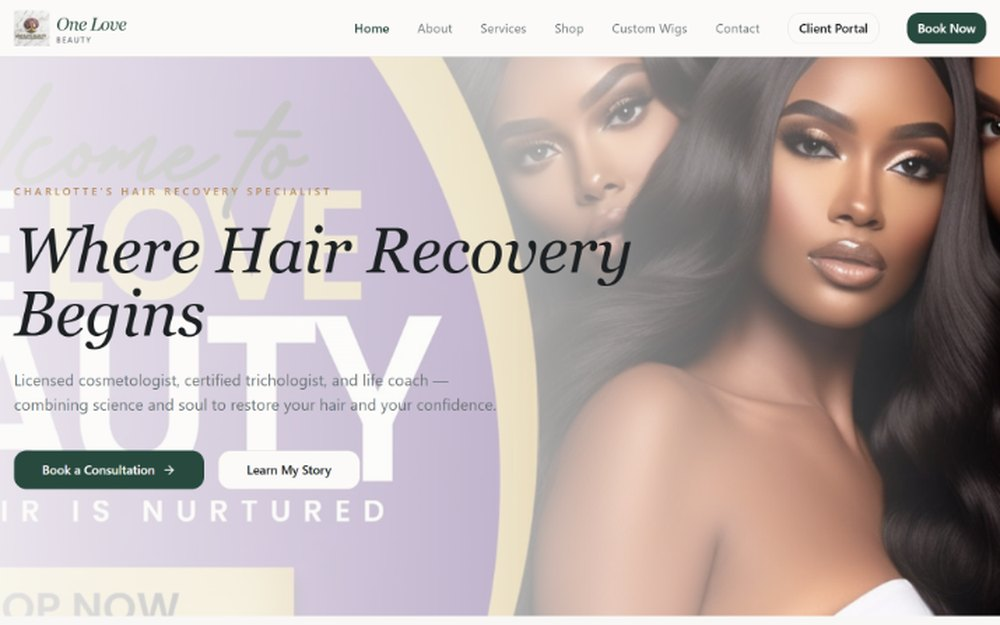
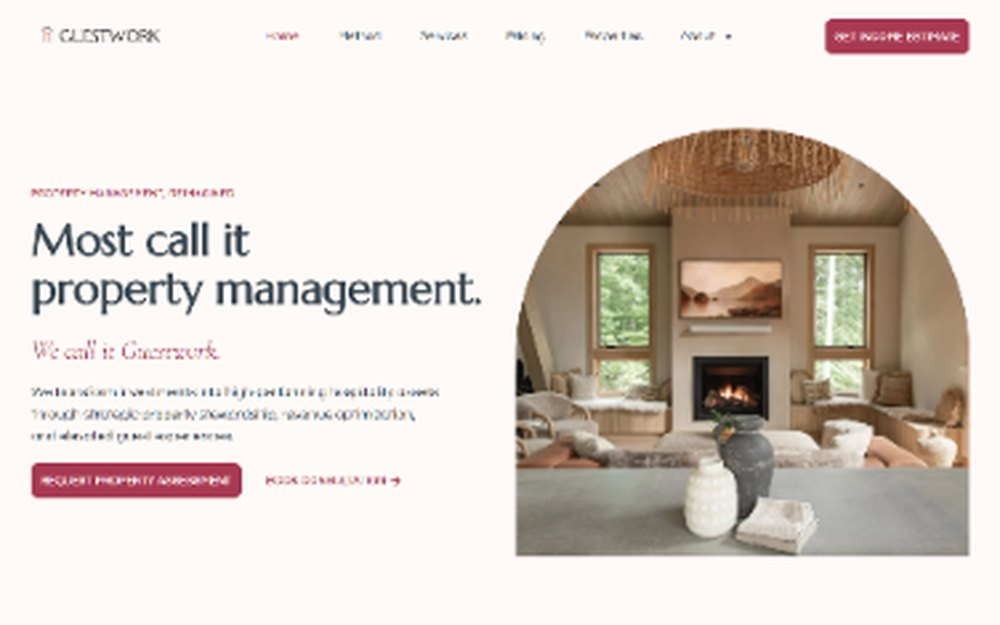
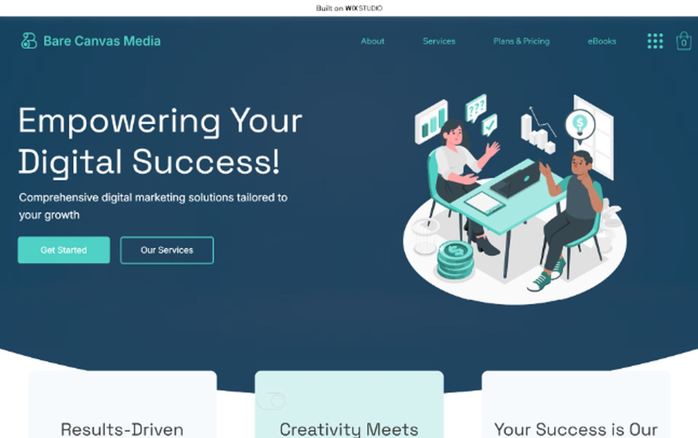

Websites · systems · digital products
Digital experiences that work.
Websites, systems and products that make the next step easier.
13 website projects12 interactive demosVerified client feedback

13documented website projects
12industry demos
About Oyeola
I build around what people need to do next.
I’m Olalekan. I design websites, business systems and digital products around real customer and team journeys.
Services
What needs to work better?
Website Design
Clearer customer journeys, booking, ecommerce and conversion.
Website servicesOperations Systems
Leads, projects, ownership, reporting and automation.
Operations servicesDigital Planners
Premium hyperlinked planners built for a specific buyer.
Planner servicesDemo Lab
See what your website could do.
Selected work
Real projects you can inspect.

One Love Beauty
A clearer route from service discovery to booking.
View project
Guestwork Property Management
A simpler path for rental owners to reach consultation.
View project
Bare Canvas Media
A stronger offer hierarchy with a more distinctive visual system.
View projectVerified feedback
What clients said.
★★★★★
“The planner is not only beautiful but also functional and easy to use.”
Digital planner projectVerified Fiverr review
★★★★★
“Definitely better than what I had pictured to get on Joomla.”
Website projectVerified Fiverr review
★★★★★
“It feels like it was part of the original design rather than something added afterward.”
Website projectVerified Fiverr review